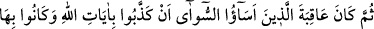
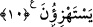
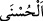
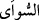
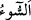
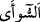
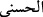
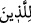
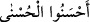
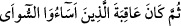

de buradandır. Çünkü o, ilmi yarıp açmış ve onun içerisine büyük bir girişten girmiştir.
Âyetin mânâsı; onlar ziraat, toprağı işlemek, su ve maden çıkarmak için yeryüzünü
altüst ettiler, demektir.
“Onu bunların imar ettiklerinden” sayı, keyfiyet ve zaman bakımından bu
müşriklerin, yâni Mekke halkınının imar ettiklerinden “daha çok imar etmişlerdi.”
Nasıl böyle olmasın ki onlar kendisinden başkasına yayılıp dağılmadıkları ekinsiz bir
vâdinin halkıdır.
“Peygamberleri, onlara da nice açık deliller” mûcizeler ve açık âyetler/işâretler
“getirmişlerdi.” Onlar ise hemen onları yalanladılar. Allah Teâlâ da onları helak etti.
“Zaten Allah” yaptığı bu azab ve helâk etme ile onlar tarafından bunu gerektiren bir suç
olmaksızın “onlara zulmedecek değildi; fakat onlar” helak olmayı gerektiren günahları
işlemeye cür’et etmek sûretiyle “kendi kendilerine zulmetmekteydiler.”
10. Sonunda, Allâh’ın âyetlerini yalan sayarak ve onları alaya alarak kötülük
yapanların âkıbetleri pek fena oldu.
“Sonunda, Allâh’ın âyetlerini yalan sayarak ve onları alaya alarak” ifâdesi, onların
dünyâda ve âhirette azâba uğratılmalarının illetidir. Yâni Allâh’ın peygamberlerine
indirilen âyetleri ve onların elinde ortaya çıkan mûcizelerini yalanlamaları ve alaya
almaları sebebiyle demektir. Alaya almalarının muzâri siygası ile getirilmesi, onun
sürekli olduğuna ve yenilendiğine delâlet etmek içindir. “Kötülük yapanların” yâni
günah işleyenlerin, kâfir olanların “âkıbetleri pek fena” cezâların en kötüsü ve
korkuncu olan bir cezâ “oldu.” Bu cezâ, cehennem ateşiyle cezâlandırılmaktır. Cezâ,
sanki fenâlığın/kötülüğün kendisiymiş gibi mübâlağa edilerek “pek fenâ” diye
vasfedilmiştir. “__WORD__ (el-husnâ)”nın cennetin ismi olduğu gibi “__WORD__ (es-sûâ)”nın da
cehennemin ismi olduğu söylenmiştir. Cehennemin böyle isimlendirilmesinin sebebi
içinde olanlara kötülük etmesi sebebiyledir.
Râğıb der ki: “__WORD__ (kötülük)” dünyâ ve âhiretle ilgili işlerden, nefsi ve bedeniyle
ilgili durumlardan, mal ve can kaybından dolayı insanı kederlendiren her şeydir. “__WORD__
kelimesi ile çirkin olan her şey ifâde edilmiştir. Bu yüzden de “__WORD__ kelimesinin
karşılığı olarak kullanılmış; “
Güzel davrananlara el-husnâ (daha
güzel karşılık) vardır.” (Yûnus, 10/26) buyrulduğu gibi “__WORD__
buyrulmuştur.”
Bu âyetlerden netice olarak anlaşılan şudur: Yalanlayan geçmiş ümmetlere,